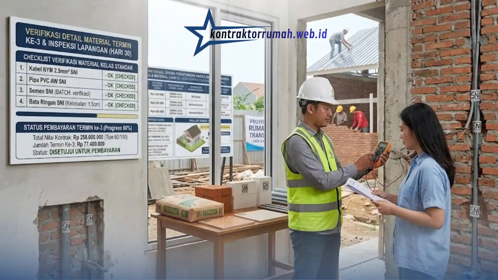

Harga borongan rumah per meter persegi di Jabodetabek pada 2026 berkisar antara Rp3.200.000 hingga Rp6.500.000/m², tergantung kelas material dan kompleksitas desain. Rentang harga sebesar itu sering membuat calon pemilik rumah bingung menentukan anggaran riil, terutama karena banyak pemborong menawarkan harga murah tanpa merinci spesifikasi material yang dipakai. Artikel ini membedah skema perhitungan harga borongan secara terbuka, lengkap dengan simulasi angka, agar Anda bisa menilai kewajaran sebuah penawaran sebelum menandatangani kontrak.
Poin Penting
- Harga borongan rumah 2026 di Jabodetabek berkisar Rp3,2 juta – Rp6,5 juta/m² tergantung kelas material.
- Tiga komponen biaya utama: pekerjaan sipil (40-45%), finishing (30-35%), dan utilitas (20-25%).
- Selalu minta RAB tertulis dengan merek & tipe material spesifik, bukan sekadar angka total per m².
- Biaya pagar, carport, sumur bor, dan IMB/PBG umumnya di luar harga borongan per m² dasar.
- Sistem pembayaran termin sesuai progres adalah ciri pemborong kredibel dan terpercaya.
Mengapa Memilih Sistem Harga Borongan Rumah per Meter?
Sistem borongan per meter persegi memberikan kepastian anggaran sejak awal proyek, karena harga jasa dan material sudah terikat dalam satu angka tetap per m² tanpa risiko pembengkakan biaya di tengah jalan. Kontraktor Rumah menerapkan skema ini dengan rincian item pekerjaan yang tercantum jelas dalam kontrak, sehingga klien tahu persis apa yang mereka bayar bukan sekadar angka borongan tanpa dasar perhitungan.
Sistem ini berbeda dari borongan jasa saja (di mana material dibeli terpisah oleh pemilik rumah) maupun sistem harian yang rawan molor waktu pengerjaan. Borongan jasa + material cocok bagi pemilik rumah yang ingin fokus pada hasil akhir tanpa harus mengurus logistik material setiap hari.
Rincian Skema Perhitungan Harga Borongan Rumah per Meter (Jasa & Material)
Harga borongan per m² dihitung dari akumulasi tiga kelompok pekerjaan besar, dan masing-masing punya bobot biaya yang berbeda terhadap total anggaran. Memahami komposisi ini penting agar Anda bisa menegosiasikan item mana yang bisa disesuaikan tanpa mengorbankan kualitas struktural.
1. Pekerjaan Sipil Standar (Pondasi, Dinding, Struktur Atap)
Kelompok ini biasanya menyerap 40-45% dari total biaya borongan karena mencakup elemen struktural yang menentukan usia bangunan. Pondasi menggunakan batu kali atau footplat beton bertulang tergantung kondisi tanah, dinding bata merah atau bata ringan (hebel) dengan ketebalan plester standar 1,5 cm, dan struktur atap baja ringan berlapis anti karat (galvalum/zincalume) dengan ketebalan minimal 0,75 mm sebagai acuan SNI.
Kegagalan paling umum pada tahap ini adalah pengurangan diameter besi tulangan kolom dari standar 10-12 mm menjadi 8 mm, atau pengurangan jarak sengkang yang tidak terlihat kasat mata setelah dicor — inilah alasan pengawasan harian pada tahap struktur menjadi krusial.
2. Pekerjaan Finishing (Cat, Keramik/Granit, Plafon)
Pekerjaan finishing menyumbang sekitar 30-35% dari total biaya borongan dan menjadi area yang paling sering dikorbankan pemborong nakal karena perbedaan kualitasnya tidak langsung terlihat oleh orang awam. Cat tembok kelas ekonomis dengan cat kelas premium (contoh: setara Dulux Weathershield atau Nippon Paint Vinilex) memiliki selisih harga hingga 3x lipat per liternya, meski secara visual tampak serupa saat baru diaplikasikan.
Keramik lantai ukuran 40x40 cm ber-SNI dengan ketebalan minimal 6-7 mm berbeda jauh dari keramik non-SNI yang lebih tipis dan rentan retak dalam 1-2 tahun pemakaian. Begitu pula plafon gypsum standar 9 mm versus gypsum tipis 6 mm yang mudah melendut.
3. Pekerjaan Utilitas (Kabel Listrik, Pipa Air, Sanitasi)
Bobot pekerjaan utilitas berkisar 20-25% dari total biaya, mencakup instalasi kabel listrik NYM ukuran 2,5 mm² untuk stop kontak dan 1,5 mm² untuk titik lampu sesuai standar PUIL (Persyaratan Umum Instalasi Listrik), pipa air bersih PVC/PPR kelas AW, serta sistem sanitasi dengan septic tank biofilter.

Sampling fisik material dan pembayaran bertahap sesuai progres menjadi kunci mengawal kualitas proyek borongan.
Penggunaan kabel di bawah standar ketebalan tembaga atau pipa air kelas D (bukan AW) sering luput dari perhatian karena tertanam di dalam dinding dan lantai — risiko yang baru terasa bertahun-tahun kemudian dalam bentuk korsleting atau kebocoran pipa.
Matriks Perbandingan Biaya Borongan Berdasarkan Spesifikasi Kelas Material
Tabel berikut merangkum tiga kelas spesifikasi material yang umum ditawarkan kontraktor di Jabodetabek, lengkap dengan estimasi harga per m² dan detail material acuan SNI pada 2026.
| Kelas Material | Estimasi Harga/m² | Semen & Bata | Keramik | Struktur Atap |
|---|---|---|---|---|
| Sederhana/Ekonomis | Rp3.200.000 - Rp3.800.000 | Semen non-SNI/lokal, bata merah press tangan | Keramik 40x40 non-SNI, tebal 5-6 mm | Baja ringan 0,45-0,6 mm |
| Standar | Rp3.900.000 - Rp4.800.000 | Semen SNI (Tiga Roda/Holcim), bata merah press mesin/hebel | Keramik 40x40 ber-SNI, tebal 6-7 mm | Baja ringan SNI 0,75 mm |
| Premium/Mewah | Rp4.900.000 - Rp6.500.000 | Semen SNI kelas industri, bata hebel presisi tinggi | Granit tile 60x60 atau lebih besar, tebal 8-10 mm | Baja ringan SNI 0,75-1 mm + rangka ganda |
Perbedaan harga antar kelas ini bukan sekadar selisih kosmetik — kelas sederhana pada umumnya memiliki masa pakai finishing 3-5 tahun sebelum perlu perbaikan, sementara kelas standar ke atas dapat bertahan 10-15 tahun dengan perawatan normal.
Simulasi Cara Menghitung Total Biaya Pembangunan Rumah Tipe 60/100
Untuk memahami penerapan harga borongan secara konkret, berikut simulasi perhitungan untuk rumah tipe 60 (luas bangunan 60 m²) di atas lahan 100 m² menggunakan kelas material Standar dengan harga acuan Rp4.300.000/m²:
Perhitungan dasar:
Luas bangunan: 60 m²
Harga borongan per m²: Rp4.300.000
Total biaya jasa + material: 60 m² x Rp4.300.000 = Rp258.000.000
Angka tersebut adalah biaya inti pembangunan rumah 1 lantai standar. Namun total anggaran riil perlu ditambah beberapa komponen berikut yang umumnya berada di luar hitungan borongan per m² dasar:
| Komponen Tambahan | Estimasi Biaya |
|---|---|
| Pagar depan + carport (10 m² x Rp1.500.000) | Rp15.000.000 |
| Pekerjaan sumur bor + pompa air | Rp8.000.000 |
| Biaya IMB/PBG dan perizinan | Rp5.000.000 - Rp10.000.000 |
| Estimasi Total Anggaran | Rp286.000.000 - Rp291.000.000 |
Simulasi ini menunjukkan pentingnya menanyakan secara eksplisit item apa saja yang termasuk dalam harga borongan per m² yang ditawarkan — banyak sengketa proyek terjadi karena asumsi klien dan pemborong berbeda soal cakupan biaya ini.
Tips Menghindari Kecurangan Pemborong Nakal yang Mengurangi Spek
Penurunan spesifikasi material secara diam-diam (istilah lapangan: “diakali spek”) adalah modus paling umum dalam proyek borongan rumah. Berikut langkah konkret untuk meminimalkan risiko tersebut:
- Minta RAB (Rencana Anggaran Biaya) tertulis dan terperinci, bukan hanya angka total per m². RAB rumah minimalis yang kredibel mencantumkan merek dan spesifikasi setiap item material utama.
- Cantumkan merek dan tipe material secara spesifik dalam kontrak kerja konstruksi, misalnya “semen Tiga Roda” bukan sekadar “semen kualitas baik” yang bisa ditafsirkan bebas oleh pemborong.
- Lakukan sampling fisik material sebelum dipakai, terutama besi tulangan dan keramik, dengan membandingkan cap SNI dan ukuran fisiknya terhadap spesifikasi kontrak.
- Minta laporan progres mingguan berupa foto dan video setiap tahap pekerjaan, khususnya sebelum area struktural tertutup dinding atau lantai.
- Hindari pemborong yang menolak sistem pembayaran bertahap sesuai progres (termin) — pemborong kredibel umumnya nyaman dengan pembayaran termin karena mencerminkan pekerjaan yang benar-benar selesai.
Poin ketiga dan keempat hanya efektif jika ada pihak independen yang mengawasi harian, karena pemilik rumah jarang bisa hadir di lokasi proyek setiap saat.
Catatan dari tim Kontraktor Rumah: Kontraktor Rumah beroperasi sebagai mitra konstruksi berbadan hukum PT resmi, bukan sekadar pemborong perorangan tanpa legalitas jelas — sebuah perbedaan penting saat terjadi sengketa kontrak yang memerlukan kekuatan hukum formal. Setiap proyek diawasi harian oleh Pengawas Lapangan berlatar belakang pendidikan Teknik Sipil, dengan laporan progress report kredibel yang dikirimkan secara berkala setiap minggu kepada klien. Struktur kontrak kerja yang jelas, spesifikasi material tercatat per item, dan sistem pembayaran termin sesuai progres adalah standar kerja Kontraktor Rumah dalam menjalankan proyek borongan rumah di kawasan Jabodetabek, baik untuk pembangunan baru maupun renovasi.
FAQ Seputar Harga Borongan Bangun Rumah
Memahami skema perhitungan harga borongan secara terbuka membantu Anda menilai kewajaran sebuah penawaran sebelum menandatangani kontrak. Mulai dari komposisi biaya sipil, finishing, dan utilitas, hingga simulasi RAB dan tips menghindari pengurangan spek — semua ini adalah bekal penting agar anggaran pembangunan rumah tetap terkendali dari awal hingga serah terima.